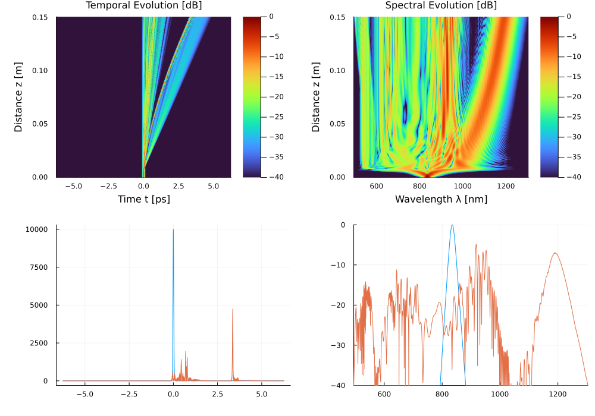

Example 1: Supercontinuum Generation in a PCF
Reproducing Fig. 3 of Dudley, Genty & Coen, Rev. Mod. Phys. 78, 1135 (2006)
DOI: 10.1103/RevModPhys.78.1135
Physical Setup
A 50 fs, 10 kW sech² pulse is launched into a 15 cm photonic crystal fiber (PCF) near the zero-dispersion wavelength (ZDW) at 835 nm. The high nonlinearity (γ = 0.11 /W/m) and anomalous dispersion combine with Raman scattering and self-steepening to drive soliton fission followed by dispersive wave (Cherenkov radiation) emission, producing a supercontinuum spanning more than one octave.
The soliton order is:
\[N = \sqrt{\frac{\gamma P_0 T_0^2}{|\beta_2|}} \approx 6.7\]
placing the pulse firmly in the soliton fission regime.
Parameters
All dispersion coefficients from Dudley et al. (2006) Table 1:
| Parameter | Value |
|---|---|
| λ₀ | 835 nm |
| L | 15 cm |
| γ | 0.11 1/(W·m) |
| β₂ | −11.83 × 10⁻²⁷ s²/m |
| β₃ | +8.1076 × 10⁻⁴¹ s³/m |
| ... | (up to β₁₀) |
| T_FWHM | 50 fs |
| P₀ | 10,000 W |
Julia Code
using JuGNLSE
# ─── PCF fiber (NKT NL-PM-750 commercial fiber preset) ─────────────────────
# Matches the exact 9-term Taylor dispersion coefficients and gamma from
# Dudley, Genty & Coen (2006) / the reference test_Dudley.py in gnlse-python.
medium = commercial_fiber("NKT_NL_PM_750", length=0.15) # 15 cm fiber
# ─── Grid ──────────────────────────────────────────────────────────────────
# 16384-point grid, 12.5 ps window at 835 nm (matches gnlse-python's reference
# resolution=2^14 exactly, for a direct apples-to-apples reproduction)
grid = create_grid(2^14, 12.5e-12, medium.lambda0)
# ─── Input pulse ─────────────────────────────────────────────────────────────
# 10 kW peak power, 50 fs FWHM sech² pulse
pulse = sech_pulse(grid, 10000.0, 50e-15)
# ─── Simulation parameters & propagation ─────────────────────────────────────
params = SimParams(;
medium = medium,
z_saves = 200, # matches gnlse-python's reference z_saves
raman_model = BlowWood(), # matches gnlse.raman_blowwood used in the reference
self_steepening = true,
)
sol = solve(pulse, params; progress=false)Solution(200 saves over 0.15 m, N=16384)
Expected Results
- Soliton fission occurring near $z \approx 0.8\text{--}1.0\text{ cm}$ (fission length $L_{\text{fiss}} \approx L_D / N \approx 6.8\text{ cm} / 8.65 \approx 0.8\text{ cm}$)
- Dispersive wave emitted to the blue side (< 600 nm)
- Raman-shifted solitons separating to the red (> 1000 nm)
- Output spectrum spanning roughly 400–1600 nm
- Both heatmaps should show the characteristic fan-out structure starting right after the fission point ($z \approx 1\text{ cm}$)
Reference
J. M. Dudley, G. Genty, S. Coen, "Supercontinuum generation in photonic crystal fiber," Rev. Mod. Phys. 78, 1135–1184 (2006). DOI: 10.1103/RevModPhys.78.1135